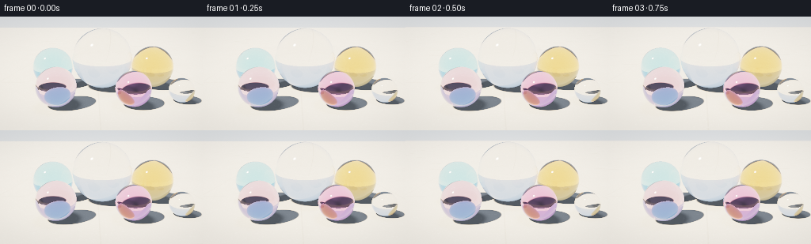
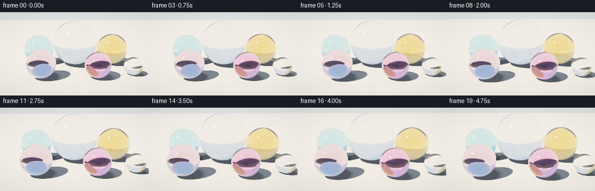

CODING AGENTS AS PIXEL WORLD MODELS
traex/DeepSeek-V4.1-Flash · phygen_078
点击播放 · 原生 RGB 像素
逐轮保存的候选
回放视频、检查图与代码变化。
每份候选均可单独播放。实际图片检查记录在下方工具轨迹中。
候选 01播放与检查图
点击播放 · 原生 RGB 像素


展开代码变化
--- 上一保存版本
+++ 本次保存版本
@@ -0,0 +1,519 @@
+from pathlib import Path
+import json
+import math
+
+import numpy as np
+from PIL import Image, ImageFilter
+
+import artifact_io
+
+
+ROOT = Path(__file__).resolve().parent
+SPEC = json.loads((ROOT / "task_spec.json").read_text())
+WIDTH = int(SPEC["width"])
+HEIGHT = int(SPEC["height"])
+FRAME_COUNT = int(SPEC["frames"])
+FPS = float(SPEC["fps"])
+
+# Render above the delivery size and average down for clean glass edges.
+SS = 2
+RW = WIDTH * SS
+RH = HEIGHT * SS
+EPS = 1.0e-5
+
+
+def vnorm(v):
+ return v / np.maximum(np.linalg.norm(v, axis=-1, keepdims=True), 1.0e-12)
+
+
+def smoothstep(edge0, edge1, x):
+ t = np.clip((x - edge0) / (edge1 - edge0), 0.0, 1.0)
+ return t * t * (3.0 - 2.0 * t)
+
+
+def mix(a, b, t):
+ return a + (b - a) * t
+
+
+# Marble centers, radii, and per-diameter RGB absorption. The arrangement is
+# intentionally close together but non-overlapping.
+SPHERE_CENTERS = np.array(
+ [
+ [0.035, 0.230, 0.145],
+ [-0.355, 0.155, 0.105],
+ [0.430, 0.162, 0.145],
+ [-0.255, 0.120, 0.535],
+ [0.205, 0.108, 0.550],
+ [0.525, 0.078, 0.495],
+ ],
+ dtype=np.float64,
+)
+SPHERE_RADII = np.array([0.230, 0.155, 0.162, 0.120, 0.108, 0.078], dtype=np.float64)
+SPHERE_ABSORPTION = np.array(
+ [
+ [0.015, 0.020, 0.030], # clear, faint cool cast
+ [1.050, 0.280, 0.070], # cobalt blue
+ [0.100, 0.640, 1.650], # warm amber
+ [0.280, 0.700, 0.360], # sea green
+ [0.220, 1.100, 0.420], # rose
+ [0.025, 0.050, 0.075], # small clear
+ ],
+ dtype=np.float64,
+)
+SPHERE_COUNT = len(SPHERE_RADII)
+
+# Direction toward the sun. The low-ish elevation makes readable cast shadows.
+SUN_DIR = vnorm(np.array([-0.58, 0.78, 0.30]))
+SUN_COLOR = np.array([1.00, 0.83, 0.62])
+SUN_INTENSITY = 2.35
+SKY_COLOR = np.array([0.44, 0.58, 0.76])
+HORIZON_COLOR = np.array([0.72, 0.75, 0.76])
+AMBIENT_COLOR = np.array([0.30, 0.35, 0.43])
+
+# Caustics are baked on a world-space floor grid, then sampled bilinearly.
+CAUSTIC_MIN_X = -1.45
+CAUSTIC_MAX_X = 1.45
+CAUSTIC_MIN_Z = -1.05
+CAUSTIC_MAX_Z = 1.75
+CAUSTIC_W = 640
+CAUSTIC_H = 640
+
+
+def intersect_spheres(origins, directions, exclude=-1):
+ count = origins.shape[0]
+ best_t = np.full(count, np.inf, dtype=np.float64)
+ best_id = np.full(count, -1, dtype=np.int16)
+
+ for index in range(SPHERE_COUNT):
+ if index == exclude:
+ continue
+ center = SPHERE_CENTERS[index]
+ radius = SPHERE_RADII[index]
+ oc = origins - center
+ b = np.einsum("ij,ij->i", oc, directions)
+ c = np.einsum("ij,ij->i", oc, oc) - radius * radius
+ disc = b * b - c
+ root = np.sqrt(np.maximum(disc, 0.0))
+ near = -b - root
+ far = -b + root
+ t = np.where(near > EPS, near, far)
+ valid = (disc > 0.0) & (t > EPS) & (t < best_t)
+ best_t[valid] = t[valid]
+ best_id[valid] = index
+ return best_t, best_id
+
+
+def intersect_floor(origins, directions):
+ downward = directions[:, 1] < -EPS
+ t = np.full(origins.shape[0], np.inf, dtype=np.float64)
+ t[downward] = -origins[downward, 1] / directions[downward, 1]
+ t[(t <= EPS) & downward] = np.inf
+ return t
+
+
+def reflect(directions, normals):
+ return directions - 2.0 * np.sum(directions * normals, axis=-1, keepdims=True) * normals
+
+
+def refract(directions, normals, eta):
+ # Put the normal on the incident side so the same expression handles
+ # entering and leaving a dielectric.
+ facing = np.sum(directions * normals, axis=-1, keepdims=True) < 0.0
+ n = np.where(facing, normals, -normals)
+ cos_i = np.clip(-np.sum(directions * n, axis=-1, keepdims=True), 0.0, 1.0)
+ k = 1.0 - eta * eta * (1.0 - cos_i * cos_i)
+ tir = k < 0.0
+ cos_t = np.sqrt(np.maximum(k, 0.0))
+ refracted = vnorm(eta * directions + (eta * cos_i - cos_t) * n)
+ return refracted, tir
+
+
+def hash2(ix, iz, seed):
+ h = (
+ ix.astype(np.uint32) * np.uint32(374761393)
+ + iz.astype(np.uint32) * np.uint32(668265263)
+ + np.uint32(seed * 1442695 + 1013904223)
+ )
+ h = (h ^ (h >> np.uint32(13))) * np.uint32(1274126177)
+ h ^= h >> np.uint32(16)
+ return h.astype(np.float64) / 4294967295.0
+
+
+def value_noise(x, z, scale, seed):
+ px = x * scale
+ pz = z * scale
+ ix = np.floor(px).astype(np.int64)
+ iz = np.floor(pz).astype(np.int64)
+ fx = px - ix
+ fz = pz - iz
+ sx = fx * fx * (3.0 - 2.0 * fx)
+ sz = fz * fz * (3.0 - 2.0 * fz)
+ a = hash2(ix, iz, seed)
+ b = hash2(ix + 1, iz, seed)
+ c = hash2(ix, iz + 1, seed)
+ d = hash2(ix + 1, iz + 1, seed)
+ return mix(mix(a, b, sx), mix(c, d, sx), sz)
+
+
+def floor_texture(x, z):
+ broad = value_noise(x, z, 2.7, 11)
+ medium = value_noise(x, z, 12.0, 29)
+ fine = value_noise(x, z, 52.0, 71)
+ grain = 0.52 * broad + 0.31 * medium + 0.17 * fine
+
+ base = np.stack(
+ [
+ 0.535 + 0.050 * (grain - 0.5),
+ 0.515 + 0.043 * (grain - 0.5),
+ 0.475 + 0.036 * (grain - 0.5),
+ ],
+ axis=-1,
+ )
+
+ # A pair of shallow stone seams gives the floor scale without becoming
+ # the subject of the frame.
+ spacing = 0.86
+ dx = np.abs(((x + spacing * 0.5) % spacing) - spacing * 0.5)
+ dz = np.abs(((z + spacing * 0.5) % spacing) - spacing * 0.5)
+ seam_distance = np.minimum(dx, dz)
+ seam = 1.0 - smoothstep(0.0015, 0.0050, seam_distance)
+ base *= (1.0 - 0.14 * seam)[:, None]
+
+ # Sparse polished aggregate catches tiny amounts of light.
+ fleck = value_noise(x, z, 155.0, 137)
+ sparkle = smoothstep(0.79, 0.94, fleck)
+ base += 0.055 * sparkle[:, None]
+ return np.clip(base, 0.0, 1.0)
+
+
+def sample_caustic(x, z):
+ gx = (x - CAUSTIC_MIN_X) / (CAUSTIC_MAX_X - CAUSTIC_MIN_X) * (CAUSTIC_W - 1)
+ gz = (z - CAUSTIC_MIN_Z) / (CAUSTIC_MAX_Z - CAUSTIC_MIN_Z) * (CAUSTIC_H - 1)
+ inside = (gx >= 0.0) & (gx <= CAUSTIC_W - 1) & (gz >= 0.0) & (gz <= CAUSTIC_H - 1)
+ gx = np.clip(gx, 0.0, CAUSTIC_W - 1.0001)
+ gz = np.clip(gz, 0.0, CAUSTIC_H - 1.0001)
+ x0 = np.floor(gx).astype(np.int32)
+ z0 = np.floor(gz).astype(np.int32)
+ fx = (gx - x0)[:, None]
+ fz = (gz - z0)[:, None]
+ m = CAUSTIC_MAP
+ a = m[z0, x0]
+ b = m[z0, x0 + 1]
+ c = m[z0 + 1, x0]
+ d = m[z0 + 1, x0 + 1]
+ result = mix(mix(a, b, fx), mix(c, d, fx), fz)
+ return result * inside[:, None]
+
+
+def floor_shade(points, view_directions):
+ x = points[:, 0]
+ z = points[:, 2]
+ albedo = floor_texture(x, z)
+
+ visibility = np.ones(points.shape[0], dtype=np.float64)
+ contact_ao = np.ones(points.shape[0], dtype=np.float64)
+ for index in range(SPHERE_COUNT):
+ center = SPHERE_CENTERS[index]
+ radius = SPHERE_RADII[index]
+ oc = points - center
+ b = oc @ SUN_DIR
+ perpendicular_sq = np.einsum("ij,ij->i", oc, oc) - b * b
+ perpendicular = np.sqrt(np.maximum(perpendicular_sq, 0.0))
+ toward_light = -b
+ penumbra = max(0.0035, radius * 0.035)
+ shadow = (toward_light > 0.0) * (
+ 1.0 - smoothstep(radius - penumbra, radius + penumbra, perpendicular)
+ )
+ visibility *= 1.0 - shadow
+
+ horizontal = np.sqrt((x - center[0]) ** 2 + (z - center[2]) ** 2)
+ edge_gap = np.maximum(horizontal - radius, 0.0)
+ contact_ao *= 1.0 - 0.48 * np.exp(-((edge_gap / 0.030) ** 2))
+
+ # A weak grazing-angle sheen helps the honed floor feel solid.
+ view_y = np.clip(-view_directions[:, 1], 0.0, 1.0)
+ sheen = (1.0 - view_y) ** 4
+ diffuse = albedo * SUN_COLOR * SUN_INTENSITY * visibility[:, None]
+ ambient = albedo * AMBIENT_COLOR * (0.78 + 0.22 * sheen[:, None]) * contact_ao[:, None]
+ caustic = albedo * sample_caustic(x, z) * 2.65
+ return diffuse + ambient + caustic
+
+
+def env_color(directions):
+ y = directions[:, 1]
+ up = np.clip(y, 0.0, 1.0)
+ sky = mix(HORIZON_COLOR[None, :], SKY_COLOR[None, :], np.sqrt(up)[:, None])
+
+ mu = np.clip(directions @ SUN_DIR, -1.0, 1.0)
+ broad = smoothstep(math.cos(math.radians(15.0)), 1.0, mu)
+ disk = smoothstep(math.cos(math.radians(1.0)), math.cos(math.radians(0.35)), mu)
+ sky += broad[:, None] * np.array([0.34, 0.24, 0.13]) * 0.30
+ sky += disk[:, None] * SUN_COLOR * 12.0
+ return sky
+
+
+def glass_tint(index, path_length):
+ diameter = 2.0 * SPHERE_RADII[index]
+ return np.exp(-SPHERE_ABSORPTION[index][None, :] * (path_length[:, None] / diameter))
+
+
+def transmitted_ray(directions, points, normals, index):
+ inside, tir_entry = refract(directions, normals, 1.0 / 1.52)
+ center = SPHERE_CENTERS[index]
+ radius = SPHERE_RADII[index]
+ to_center = points - center
+ exit_distance = -2.0 * np.sum(inside * to_center, axis=-1)
+ exit_points = points + inside * exit_distance[:, None]
+ exit_normals = vnorm(exit_points - center)
+ outside, tir_exit = refract(inside, exit_normals, 1.52)
+ origins = exit_points + exit_normals * 2.0e-4
+ return origins, outside, exit_distance, (tir_entry | tir_exit)[:, 0]
+
+
+def glass_shade_low(points, directions, normals, index):
+ cos_incident = np.clip(-np.sum(directions * normals, axis=-1), 0.0, 1.0)
+ fresnel = 0.04 + 0.96 * (1.0 - cos_incident) ** 5
+ reflected = reflect(directions, normals)
+ reflection = env_color(reflected)
+
+ origins, outside, path_length, total_internal = transmitted_ray(
+ directions, points, normals, index
+ )
+ floor_t = intersect_floor(origins, outside)
+ transmitted = env_color(outside)
+ hit = np.isfinite(floor_t)
+ if np.any(hit):
+ floor_points = origins[hit] + outside[hit] * floor_t[hit, None]
+ transmitted[hit] = floor_shade(floor_points, outside[hit])
+ tint = glass_tint(index, path_length)
+ transmitted *= tint
+ transmitted[total_internal] = reflection[total_internal]
+ return fresnel[:, None] * reflection + (1.0 - fresnel)[:, None] * transmitted
+
+
+def glass_shade(points, directions, normals, index, depth):
+ if depth >= 1:
+ return glass_shade_low(points, directions, normals, index)
+
+ cos_incident = np.clip(-np.sum(directions * normals, axis=-1), 0.0, 1.0)
+ fresnel = 0.04 + 0.96 * (1.0 - cos_incident) ** 5
+ reflected = reflect(directions, normals)
+ reflection = trace_rays(
+ points + normals * 2.0e-4, reflected, depth + 1, exclude=index
+ )
+
+ origins, outside, path_length, total_internal = transmitted_ray(
+ directions, points, normals, index
+ )
+ transmitted = trace_rays(origins, outside, depth + 1, exclude=index)
+ transmitted *= glass_tint(index, path_length)
+ transmitted[total_internal] = reflection[total_internal]
+
+ color = fresnel[:, None] * reflection + (1.0 - fresnel)[:, None] * transmitted
+
+ # The sun itself is tiny at this resolution; a restrained analytic glint
+ # keeps the highlight legible while the environment disk supplies the rest.
+ glint = np.maximum(np.sum(reflected * SUN_DIR, axis=-1), 0.0) ** 850
+ color += glint[:, None] * SUN_COLOR * 9.0
+ return color
+
+
+def trace_rays(origins, directions, depth=0, exclude=-1):
+ count = origins.shape[0]
+ color = np.empty((count, 3), dtype=np.float64)
+ if count == 0:
+ return color
+
+ sphere_t, sphere_id = intersect_spheres(origins, directions, exclude=exclude)
+ floor_t = intersect_floor(origins, directions)
+
+ floor_hit = floor_t < sphere_t
+ if np.any(floor_hit):
+ floor_points = origins[floor_hit] + directions[floor_hit] * floor_t[floor_hit, None]
+ color[floor_hit] = floor_shade(floor_points, directions[floor_hit])
+
+ for index in range(SPHERE_COUNT):
+ hit = (sphere_id == index) & (sphere_t < floor_t)
+ if not np.any(hit):
+ continue
+ points = origins[hit] + directions[hit] * sphere_t[hit, None]
+ normals = vnorm(points - SPHERE_CENTERS[index])
+ color[hit] = glass_shade(points, directions[hit], normals, index, depth)
+
+ miss = ~(floor_hit | (sphere_id >= 0))
+ if np.any(miss):
+ color[miss] = env_color(directions[miss])
+ return color
+
+
+def build_caustics():
+ maps = np.zeros((CAUSTIC_H, CAUSTIC_W, 3), dtype=np.float64)
+ rng = np.random.default_rng(1907)
+ samples = 42000
+
+ # Basis for the circular bundle of parallel sunlight rays.
+ helper = np.array([1.0, 0.0, 0.0])
+ basis1 = vnorm(np.cross(SUN_DIR, helper))
+ basis2 = np.cross(SUN_DIR, basis1)
+ disk_radius = np.sqrt(rng.random(samples))
+ disk_angle = rng.random(samples) * (2.0 * math.pi)
+ disk_u = disk_radius * np.cos(disk_angle)
+ disk_v = disk_radius * np.sin(disk_angle)
+
+ for index in range(SPHERE_COUNT):
+ center = SPHERE_CENTERS[index]
+ radius = SPHERE_RADII[index]
+ origins = (
+ center[None, :]
+ - SUN_DIR[None, :] * (2.2 * radius)
+ + disk_u[:, None] * radius * basis1[None, :]
+ + disk_v[:, None] * radius * basis2[None, :]
+ )
+ directions = np.broadcast_to(-SUN_DIR, origins.shape)
+ oc = origins - center
+ b = np.einsum("ij,ij->i", oc, directions)
+ c = np.einsum("ij,ij->i", oc, oc) - radius * radius
+ disc = b * b - c
+ valid = disc > 0.0
+ root = np.sqrt(np.maximum(disc, 0.0))
+ t_entry = -b - root
+ valid &= t_entry > 0.0
+
+ points = origins[valid] + directions[valid] * t_entry[valid, None]
+ normals = (points - center) / radius
+ for channel, eta in enumerate((1.507, 1.520, 1.536)):
+ inside, tir_entry = refract(directions[valid], normals, 1.0 / eta)
+ to_center = points - center
+ exit_distance = -2.0 * np.sum(inside * to_center, axis=-1)
+ exit_points = points + inside * exit_distance[:, None]
+ exit_normals = vnorm(exit_points - center)
+ outside, tir_exit = refract(inside, exit_normals, eta)
+ downward = outside[:, 1] < -0.01
+ good = downward & ~(tir_entry | tir_exit)
+ if not np.any(good):
+ continue
+ floor_distance = -exit_points[good, 1] / outside[good, 1]
+ floor_points = exit_points[good] + outside[good] * floor_distance[:, None]
+
+ gx = (
+ (floor_points[:, 0] - CAUSTIC_MIN_X)
+ / (CAUSTIC_MAX_X - CAUSTIC_MIN_X)
+ * (CAUSTIC_W - 1)
+ )
+ gz = (
+ (floor_points[:, 2] - CAUSTIC_MIN_Z)
+ / (CAUSTIC_MAX_Z - CAUSTIC_MIN_Z)
+ * (CAUSTIC_H - 1)
+ )
+ inside_grid = (
+ (gx >= 0.0)
+ & (gx < CAUSTIC_W)
+ & (gz >= 0.0)
+ & (gz < CAUSTIC_H)
+ )
+ gx = gx[inside_grid]
+ gz = gz[inside_grid]
+ ix = np.floor(gx).astype(np.int32)
+ iz = np.floor(gz).astype(np.int32)
+ tint = math.exp(
+ -SPHERE_ABSORPTION[index, channel]
+ * float(np.mean(exit_distance[good][inside_grid]) / (2.0 * radius))
+ )
+ np.add.at(maps[:, :, channel], (iz, ix), tint)
+
+ # A tiny blur approximates finite sun size and makes the caustic stable
+ # under camera motion.
+ kernel_x = np.exp(-0.5 * (np.arange(-4, 5) / 1.15) ** 2)
+ kernel_x /= kernel_x.sum()
+ padded = np.pad(maps, ((4, 4), (0, 0), (0, 0)), mode="edge")
+ blurred = sum(kernel_x[i] * padded[i : i + CAUSTIC_H] for i in range(9))
+ padded = np.pad(blurred, ((0, 0), (4, 4), (0, 0)), mode="edge")
+ blurred = sum(kernel_x[i] * padded[:, i : i + CAUSTIC_W] for i in range(9))
+
+ positive = blurred[blurred > 0.0]
+ if positive.size:
+ reference = np.percentile(positive, 99.55)
+ blurred *= 1.65 / max(reference, 1.0e-8)
+ return blurred
+
+
+def camera_for_time(t):
+ phase = t / max(FRAME_COUNT - 1, 1)
+ eased = phase * phase * (3.0 - 2.0 * phase)
+ eye = np.array([-0.028 + 0.072 * eased, 0.465 - 0.010 * eased, 1.680 - 0.135 * eased])
+ target = np.array([0.025 + 0.018 * eased, 0.128 - 0.004 * eased, 0.225])
+ forward = vnorm(target - eye)
+ right = vnorm(np.cross(forward, np.array([0.0, 1.0, 0.0])))
+ up = np.cross(right, forward)
+ return eye, forward, right, up
+
+
+def render_frame(frame_index):
+ eye, forward, right, up = camera_for_time(frame_index)
+ vertical_fov = math.radians(32.0)
+ tan_v = math.tan(vertical_fov * 0.5)
+ tan_h = tan_v * (RW / RH)
+
+ xs = ((np.arange(RW) + 0.5) / RW * 2.0 - 1.0) * tan_h
+ ys = (1.0 - (np.arange(RH) + 0.5) / RH * 2.0) * tan_v
+ gx, gy = np.meshgrid(xs, ys)
+ directions = (
+ forward[None, None, :]
+ + gx[:, :, None] * right[None, None, :]
+ + gy[:, :, None] * up[None, None, :]
+ )
+ directions = vnorm(directions.reshape(-1, 3))
+ origins = np.broadcast_to(eye, directions.shape)
+ linear = trace_rays(origins, directions, depth=0)
+ image = linear.reshape(RH, RW, 3)
+
+ # Box-filter the supersampled image before tone mapping.
+ image = image.reshape(HEIGHT, SS, WIDTH, SS, 3).mean(axis=(1, 3))
+
+ # ACES-style filmic curve keeps highlights warm instead of clipping to
+ # flat white.
+ exposure = 1.12
+ x = np.maximum(image * exposure, 0.0)
+ mapped = (x * (2.51 * x + 0.03)) / (x * (2.43 * x + 0.59) + 0.14)
+ mapped = np.clip(mapped, 0.0, 1.0)
+
+ # Gentle lens vignette, then a tiny amount of luminance sharpening.
+ yy, xx = np.mgrid[0:HEIGHT, 0:WIDTH]
+ nx = (xx + 0.5) / WIDTH * 2.0 - 1.0
+ ny = (yy + 0.5) / HEIGHT * 2.0 - 1.0
+ radius = np.sqrt(nx * nx * 0.62 + ny * ny)
+ vignette = 1.0 - 0.12 * smoothstep(0.55, 1.42, radius)
+ mapped *= vignette[:, :, None]
+
+ srgb = np.power(mapped, 1.0 / 2.2)
+ luminance = srgb @ np.array([0.2126, 0.7152, 0.0722])
+ blurred = np.asarray(
+ Image.fromarray(np.clip(luminance * 255.0, 0.0, 255.0).astype(np.uint8)).filter(
+ ImageFilter.GaussianBlur(radius=0.62)
+ ),
+ dtype=np.float64,
+ ) / 255.0
+ detail = luminance - blurred
+ srgb += detail[:, :, None] * 0.16
+
+ # Deterministic 1-LSB dither prevents visible banding in the bright floor.
+ rng = np.random.default_rng(5000 + frame_index)
+ srgb += (rng.random((HEIGHT, WIDTH, 1)) - 0.5) / 255.0
+ return np.clip(srgb * 255.0 + 0.5, 0.0, 255.0).astype(np.uint8)
+
+
+def main():
+ global CAUSTIC_MAP
+ print("baking sunlight caustics...", flush=True)
+ CAUSTIC_MAP = build_caustics()
+ frames = []
+ for frame_index in range(FRAME_COUNT):
+ print(f"rendering frame {frame_index + 1}/{FRAME_COUNT}", flush=True)
+ frames.append(render_frame(frame_index))
+ frames = np.stack(frames)
+ artifact_io.save(frames, ROOT)
+ print(f"saved {FRAME_COUNT} frames at {WIDTH}x{HEIGHT}, {FPS:g} fps", flush=True)
+
+
+if __name__ == "__main__":
+ main()
候选 02播放与检查图
点击播放 · 原生 RGB 像素

展开代码变化
--- 上一保存版本
+++ 本次保存版本
@@ -39,23 +39,23 @@
# intentionally close together but non-overlapping.
SPHERE_CENTERS = np.array(
[
- [0.035, 0.230, 0.145],
- [-0.355, 0.155, 0.105],
- [0.430, 0.162, 0.145],
- [-0.255, 0.120, 0.535],
- [0.205, 0.108, 0.550],
- [0.525, 0.078, 0.495],
+ [0.010, 0.265, 0.190],
+ [-0.375, 0.175, 0.115],
+ [0.425, 0.182, 0.155],
+ [-0.275, 0.132, 0.570],
+ [0.190, 0.116, 0.590],
+ [0.545, 0.086, 0.510],
],
dtype=np.float64,
)
-SPHERE_RADII = np.array([0.230, 0.155, 0.162, 0.120, 0.108, 0.078], dtype=np.float64)
+SPHERE_RADII = np.array([0.265, 0.175, 0.182, 0.132, 0.116, 0.086], dtype=np.float64)
SPHERE_ABSORPTION = np.array(
[
[0.015, 0.020, 0.030], # clear, faint cool cast
- [1.050, 0.280, 0.070], # cobalt blue
- [0.100, 0.640, 1.650], # warm amber
- [0.280, 0.700, 0.360], # sea green
- [0.220, 1.100, 0.420], # rose
+ [1.500, 0.400, 0.100], # cobalt blue
+ [0.140, 0.900, 2.350], # warm amber
+ [0.400, 1.000, 0.520], # sea green
+ [0.320, 1.570, 0.600], # rose
[0.025, 0.050, 0.075], # small clear
],
dtype=np.float64,
@@ -64,11 +64,11 @@
# Direction toward the sun. The low-ish elevation makes readable cast shadows.
SUN_DIR = vnorm(np.array([-0.58, 0.78, 0.30]))
-SUN_COLOR = np.array([1.00, 0.83, 0.62])
-SUN_INTENSITY = 2.35
-SKY_COLOR = np.array([0.44, 0.58, 0.76])
-HORIZON_COLOR = np.array([0.72, 0.75, 0.76])
-AMBIENT_COLOR = np.array([0.30, 0.35, 0.43])
+SUN_COLOR = np.array([1.00, 0.79, 0.56])
+SUN_INTENSITY = 2.05
+SKY_COLOR = np.array([0.30, 0.43, 0.61])
+HORIZON_COLOR = np.array([0.56, 0.60, 0.62])
+AMBIENT_COLOR = np.array([0.21, 0.25, 0.32])
# Caustics are baked on a world-space floor grid, then sampled bilinearly.
CAUSTIC_MIN_X = -1.45
@@ -163,9 +163,9 @@
base = np.stack(
[
- 0.535 + 0.050 * (grain - 0.5),
- 0.515 + 0.043 * (grain - 0.5),
- 0.475 + 0.036 * (grain - 0.5),
+ 0.370 + 0.045 * (grain - 0.5),
+ 0.352 + 0.040 * (grain - 0.5),
+ 0.322 + 0.034 * (grain - 0.5),
],
axis=-1,
)
@@ -440,8 +440,8 @@
def camera_for_time(t):
phase = t / max(FRAME_COUNT - 1, 1)
eased = phase * phase * (3.0 - 2.0 * phase)
- eye = np.array([-0.028 + 0.072 * eased, 0.465 - 0.010 * eased, 1.680 - 0.135 * eased])
- target = np.array([0.025 + 0.018 * eased, 0.128 - 0.004 * eased, 0.225])
+ eye = np.array([-0.028 + 0.072 * eased, 0.365 - 0.010 * eased, 1.400 - 0.125 * eased])
+ target = np.array([0.018 + 0.018 * eased, 0.112 - 0.004 * eased, 0.220])
forward = vnorm(target - eye)
right = vnorm(np.cross(forward, np.array([0.0, 1.0, 0.0])))
up = np.cross(right, forward)
@@ -472,7 +472,7 @@
# ACES-style filmic curve keeps highlights warm instead of clipping to
# flat white.
- exposure = 1.12
+ exposure = 1.04
x = np.maximum(image * exposure, 0.0)
mapped = (x * (2.51 * x + 0.03)) / (x * (2.43 * x + 0.59) + 0.14)
mapped = np.clip(mapped, 0.0, 1.0)
候选 03播放与检查图
候选 04播放与检查图
点击播放 · 原生 RGB 像素

展开代码变化
--- 上一保存版本
+++ 本次保存版本
@@ -440,7 +440,7 @@
def camera_for_time(t):
phase = t / max(FRAME_COUNT - 1, 1)
eased = phase * phase * (3.0 - 2.0 * phase)
- eye = np.array([-0.028 + 0.072 * eased, 0.365 - 0.010 * eased, 1.400 - 0.125 * eased])
+ eye = np.array([-0.022 + 0.052 * eased, 0.385 - 0.008 * eased, 1.500 - 0.075 * eased])
target = np.array([0.018 + 0.018 * eased, 0.112 - 0.004 * eased, 0.220])
forward = vnorm(target - eye)
right = vnorm(np.cross(forward, np.array([0.0, 1.0, 0.0])))
候选 05播放与检查图
可观测工具轨迹
实际执行的命令与返回图片。
命令 1exit 0
/bin/bash -lc "pwd && rg --files -g '"'!*.mp4'"' -g '"'!*.mov'"' | sort | head -200"
命令 2exit 0
/bin/bash -lc "sed -n '1,240p' prompt.txt"
命令 3exit 0
/bin/bash -lc "sed -n '1,260p' GENERATION_RULES.md && printf '\\n--- TASK SPEC ---\\n' && sed -n '1,260p' task_spec.json"
命令 4exit 0
/bin/bash -lc "sed -n '1,260p' artifact_io.py"
命令 5exit 0
/bin/bash -lc "python - <<'PY'
import numpy, PIL
print('numpy', numpy.__version__)
print('PIL', PIL.__version__)
PY"命令 6exit 0
/bin/bash -lc 'git status --short 2>/dev/null || true'
命令 7exit 1
/bin/bash -lc 'python generate.py'
命令 8exit 1
/bin/bash -lc 'python generate.py'
命令 9exit 1
/bin/bash -lc 'python generate.py'
命令 10exit 0
/bin/bash -lc 'python generate.py'
命令 11exit 0
/bin/bash -lc "python - <<'PY'
from PIL import Image
im=Image.open('inspection.png')
print(im.size)
im.resize((im.width*2, im.height*2)).save('.tmp/inspection_2x.png')
PY"命令 12exit 0
/bin/bash -lc "python - <<'PY'
from PIL import Image
for i in [0, 7, 13, 19]:
im=Image.open(f'frames/{i:02d}.png')
im.resize((1024,576), Image.Resampling.NEAREST).save(f'.tmp/frame_{i:02d}_4x.png')
PY"命令 13exit 0
/bin/bash -lc "python - <<'PY'
from PIL import Image
import numpy as np
for i in range(20):
im=np.asarray(Image.open(f'frames/{i:02d}.png'))
print(i, im.shape, im.min(), im.max(), im.mean(axis=(0,1)).round(1), np.percentile(im,99).round(1))
PY"命令 14exit 0
/bin/bash -lc "python - <<'PY'
from PIL import Image
im=Image.open('frames/00.png').convert('RGB')
# print a coarse color map / sample grid
for y in range(0,144,12):
row=[]
for x in range(0,256,16):
r,g,b=im.getpixel((x,y)); row.append(f'{r:02x}{g:02x}{b:02x}')
print(f'{y:3d}', ' '.join(row))
PY"命令 15exit 1
/bin/bash -lc 'command -v chafa || command -v viu || command -v jp2 || command -v img2txt || command -v convert'
命令 16exit 0
/bin/bash -lc "python - <<'PY'
from PIL import Image
import numpy as np
for i in [0,10,19]:
im=np.asarray(Image.open(f'frames/{i:02d}.png')).astype(float)
print('frame',i)
# list darkest bounding box around marbles (<110 lum)
lum=im.mean(2)
ys,xs=np.where(lum<110)
print('dark', (xs.min(),ys.min(),xs.max(),ys.max()), 'count',len(xs))
# row/col bands means
print('row means', [(y,round(lum[y].mean(),1)) for y in range(0,144,16)])
PY"命令 17exit 0
/bin/bash -lc 'mkdir -p candidates/v1 && cp -R frames inspection.png transition_check.png pixels.npz index.html candidates/v1/'
命令 18exit 0
/bin/bash -lc 'python generate.py'
命令 19exit 0
/bin/bash -lc "python - <<'PY'
from PIL import Image
import numpy as np
for i in range(20):
im=np.asarray(Image.open(f'frames/{i:02d}.png')).astype(float)
lum=im.mean(2)
ys,xs=np.where(lum<100)
print(i, 'mean', im.mean(axis=(0,1)).round(1), 'darkbox', (xs.min(),ys.min(),xs.max(),ys.max()) if len(xs) else None)
PY"命令 20exit 0
/bin/bash -lc "python - <<'PY'
from PIL import Image
for i in [0,7,13,19]:
im=Image.open(f'frames/{i:02d}.png')
im.resize((1024,576), Image.Resampling.NEAREST).save(f'.tmp/v2_{i:02d}.png')
PY"命令 21exit 0
/bin/bash -lc "python - <<'PY'
from PIL import Image
import numpy as np
# marble regions; report saturation, tinted pixel positions, and frame-to-frame difference
for i in [0,7,13,19]:
im=np.asarray(Image.open(f'frames/{i:02d}.png')).astype(float)
mx=im.max(2); mn=im.min(2)
sat=(mx-mn)/np.maximum(mx,1)
print(i,'sat>0.12',int((sat>0.12).sum()),'max',round(sat.max(),3),'p99',round(np.percentile(sat,99),3))
if i:
old=np.asarray(Image.open(f'frames/{i-1:02d}.png')).astype(float)
print(' diff mean',np.abs(im-old).mean().round(2),'max',np.abs(im-old).max())
PY"命令 22exit 0
/bin/bash -lc "python - <<'PY'
from PIL import Image
import numpy as np
for i in range(20):
im=np.asarray(Image.open(f'frames/{i:02d}.png')).astype(float)
# low-saturation bright floor pixels; edge outside marbles
sat=(im.max(2)-im.min(2))/np.maximum(im.max(2),1)
print(i, 'rgb', im.mean((0,1)).round(1), 'mean lum', round(im.mean(),1), 'lowest', np.percentile(im.mean(2),1).round(1))
PY"命令 23exit 0
/bin/bash -lc 'mkdir -p candidates/v2 && cp -R frames inspection.png transition_check.png pixels.npz index.html candidates/v2/ && python generate.py'
命令 24exit 0
/bin/bash -lc "python - <<'PY'
from PIL import Image
import numpy as np, json, math
spec=json.load(open('task_spec.json'))
arr=np.stack([np.asarray(Image.open(f'frames/{i:02d}.png')) for i in range(spec['frames'])])
print('shape/dtype/range', arr.shape, arr.dtype, (arr.min(),arr.max()))
print('frame diff mean min/max', min(np.abs(arr[i].astype(float)-arr[i-1]).mean() for i in range(1,len(arr))), max(np.abs(arr[i].astype(float)-arr[i-1]).mean() for i in range(1,len(arr))))
for i in [0,6,12,19]:
im=arr[i]; lum=im.mean(2)
print(i, 'mean', round(lum.mean(),1), 'p01/p99', np.percentile(lum,[1,99]).round(1).tolist())
print('artifacts', {p: __import__('os').path.getsize(p) for p in ['pixels.npz','inspection.png','transition_check.png','index.html']})
PY"命令 25exit 0
/bin/bash -lc "python - <<'PY'
from PIL import Image
import numpy as np
for i in [0,6,12,19]:
im=np.asarray(Image.open(f'frames/{i:02d}.png'))
# colored pixels saturation > .2, excluding dark areas
mx=im.max(2).astype(float); mn=im.min(2).astype(float)
sat=(mx-mn)/np.maximum(mx,1)
ys,xs=np.where((sat>.22)&(mx>60))
print(i, 'colored bbox', (xs.min(),ys.min(),xs.max(),ys.max()), 'count',len(xs))
PY"命令 26exit 0
/bin/bash -lc "python - <<'PY'
from PIL import Image
import numpy as np
for i in [0,6,12,19]:
im=np.asarray(Image.open(f'frames/{i:02d}.png')).astype(float)
mx=im.max(2); mn=im.min(2); sat=(mx-mn)/np.maximum(mx,1)
# regions likely spheres: saturation > .28 and reasonably bright
mask=(sat>.28)&(mx>80)
ys,xs=np.where(mask)
print('\\n',i,'count',len(xs))
# 8x8 coarse occupancy
for y in range(0,144,18):
s=''
for x in range(0,256,16):
s += '#' if mask[y:y+18,x:x+16].mean()>.12 else ('+' if mask[y:y+18,x:x+16].mean()>.03 else '.')
print(s)
PY"命令 27exit 0
/bin/bash -lc "python - <<'PY'
from PIL import Image
import numpy as np
for i in [0,6,12,19]:
im=np.asarray(Image.open(f'frames/{i:02d}.png')).astype(float)
# colored clusters in bottom/foreground
sat=(im.max(2)-im.min(2))/np.maximum(im.max(2),1)
mask=(sat>.32)&(im.max(2)>70)
print('\\nframe',i)
# summarize active pixels per x band and y band
for x0 in range(0,256,32):
print(x0, int(mask[:,x0:x0+32].sum()), end=' | ')
print()
PY"命令 28exit 0
/bin/bash -lc 'sha256sum pixels.npz inspection.png transition_check.png index.html frames/00.png frames/19.png > .tmp/final_hashes_before.txt && python generate.py > .tmp/regeneration.log && sha256sum pixels.npz inspection.png transition_check.png index.html frames/00.png frames/19.png > .tmp/final_hashes_after.txt && diff -u .tmp/final_hashes_before.txt .tmp/final_hashes_after.txt && tail -3 .tmp/regeneration.log'
保存候选 5 份；完成命令 28 次；可验证图片返回 0 张。原始 API 响应与完整日志保留在本地。